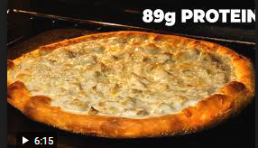

Description:
A classic - delicious, protein packed pizza.
Ingredients:
- Flour
- Vital Wheat Gluten
- Active Dry Yeast
- Chicken Breast
- Garlic
- Fat Free Mozzarella
- Turkey Pepperoni
- Alfredo Sauce
Steps
- Mix 110 grams of Flour, 20 grams of Vital Wheat Gluten, and 1.5 grams of Active Dry Yeast in a food processor.
- Add ~30 grams of water to the blender at a time, stop at 90 grams of water.
- Get dough out of processor, roll into a ball, put in a bowl and cover with cling wrap. Stick it in the fridge for 3+ hours.
- Take dough out of fridge, let sit for 30 minutes to an hour, then form it into a pizza shape.
- Add Alfredo Sauce first, then mozzarella, then chopped garlic, pepperoni, and chicken breast
- Cook at 400 degrees F for 25 minutes
- Enjoy!